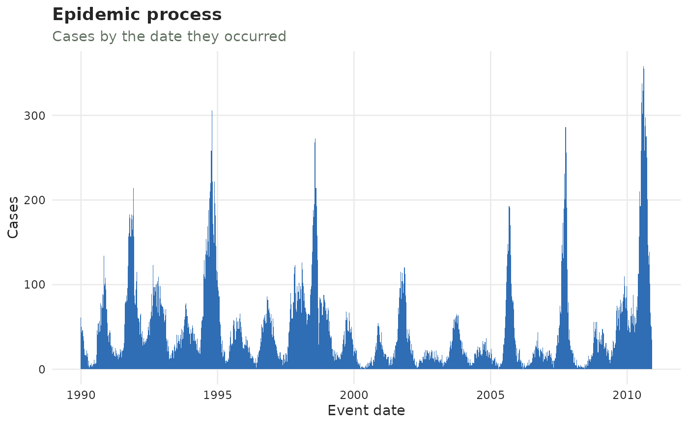

Builds the named colour palette every plot_*() function, autoplot() and
diagnostic_plot() draw from. Each element is named for the role it
plays in a plot, never for its hue, so a palette in different colours is a
matter of overriding the roles you care about:
plot_reporting_triangle(x, palette = tbl_now_palette(reporting = "#5B4B8A"))Arguments you do not name keep the package default, so a partial palette is always complete. Passing a bare named vector works too, as long as it carries every role below – the plots validate it and name what is missing.
Usage
tbl_now_palette(
reporting = "#B85348",
reporting_light = "#e78b7f",
epidemic = "#5F7E62",
epidemic_light = "#A8BFA9",
epidemic_mid = "#7A9E7E",
epidemic_dark = "#334335",
revision = "#C79800",
revision_light = "#E6CE80",
ink = "#262626",
ink_muted = "#607060",
ink_inverse = "#FFFFFF",
surface = "#FFFFFF",
surface_muted = "#F5F5F5",
surface_dark = "#1A1A1A",
grid_major = "#999999",
grid_minor = "#E0E0E0",
guide = "#D9D9D9",
guide_strong = "#737373",
annotation = "#333333",
neutral = "#B3B3B3",
zero = "#C4D5DE",
pending = "#C9CEC9",
observed = "#DFE1DF"
)Arguments
- reporting
Strong colour of the reporting process (bars, medians, flagged points).
- reporting_light
Attenuated reporting colour (box fills, wide intervals).
- epidemic
Strong colour of the epidemic process (lines, bars).
- epidemic_light
Attenuated epidemic colour (area fills).
- epidemic_mid
Mid-tone epidemic colour (the middle stop of the count ramp).
- epidemic_dark
Darkest epidemic colour (dense overplotted curves).
- revision
Strong colour of the revision process.
- revision_light
Attenuated revision colour (box fills).
- ink
Body text, axis text and titles.
- ink_muted
Secondary text: subtitles, captions, immature-region shading.
- ink_inverse
Text drawn on top of a filled label.
- surface
Fill of a label or a highlight drawn over the data.
- surface_muted
Palest surface: the low end of a sequential ramp.
- surface_dark
Deep surface for a region with no estimate (the scalogram's cone of influence).
- grid_major
Major gridlines the package draws itself.
- grid_minor
Minor gridlines the package draws itself.
- guide
Weak reference lines (a zero line, the low end of a count ramp).
- guide_strong
Stronger reference lines (the reporting triangle's iso-report diagonals).
- annotation
Text of an annotation label drawn over the data.
- neutral
De-emphasised marks: the points a test did not flag.
- zero
A cell that is observable but reported nothing – a genuine zero, as opposed to a cell that is blank because it is not yet reportable.
- pending
A case that is reported and not yet resolved.
- observed
Counts as they stand now, drawn underneath an estimate of them. Deliberately neutral: colouring these with a process role would put the data in the same visual family as the model fitted to it.
The grammar
The package has one visual grammar and the role names state it:
reporting*– the reporting process: report dates, delays, anything about when we found out. Red by default.epidemic*– the epidemic process: event dates, case counts, anything about what happened. Green by default.revision*– the revision process: revision dates and resolution arrivals. Ochre by default.
A palette that swaps the two hues is fine; a plot that draws delays with an
epidemic* role is a bug, whatever colour it comes out.
The remaining roles are furniture — text, gridlines, reference lines and the
three data states that are not a process (zero, pending, observed).
See also
autoplot(), diagnostic_plot() and
plot_reporting_hexamap(), all of which take a palette argument.
Examples
tbl_now_palette()
#> ── tbl.now palette ─────────────────────────────────────────────────────────────
#> reporting #B85348
#> reporting_light #e78b7f
#> epidemic #5F7E62
#> epidemic_light #A8BFA9
#> epidemic_mid #7A9E7E
#> epidemic_dark #334335
#> revision #C79800
#> revision_light #E6CE80
#> ink #262626
#> ink_muted #607060
#> ink_inverse #FFFFFF
#> surface #FFFFFF
#> surface_muted #F5F5F5
#> surface_dark #1A1A1A
#> grid_major #999999
#> grid_minor #E0E0E0
#> guide #D9D9D9
#> guide_strong #737373
#> annotation #333333
#> neutral #B3B3B3
#> zero #C4D5DE
#> pending #C9CEC9
#> observed #DFE1DF
# Override one role; the rest keep the package defaults.
tbl_now_palette(reporting = "#5B4B8A")
#> ── tbl.now palette ─────────────────────────────────────────────────────────────
#> reporting #5B4B8A
#> reporting_light #e78b7f
#> epidemic #5F7E62
#> epidemic_light #A8BFA9
#> epidemic_mid #7A9E7E
#> epidemic_dark #334335
#> revision #C79800
#> revision_light #E6CE80
#> ink #262626
#> ink_muted #607060
#> ink_inverse #FFFFFF
#> surface #FFFFFF
#> surface_muted #F5F5F5
#> surface_dark #1A1A1A
#> grid_major #999999
#> grid_minor #E0E0E0
#> guide #D9D9D9
#> guide_strong #737373
#> annotation #333333
#> neutral #B3B3B3
#> zero #C4D5DE
#> pending #C9CEC9
#> observed #DFE1DF
data(denguedat)
dn <- tbl_now(denguedat, onset_week, report_week, verbose = FALSE)
plot_epidemic_process(dn, palette = tbl_now_palette(epidemic = "#2F6DB4"))
